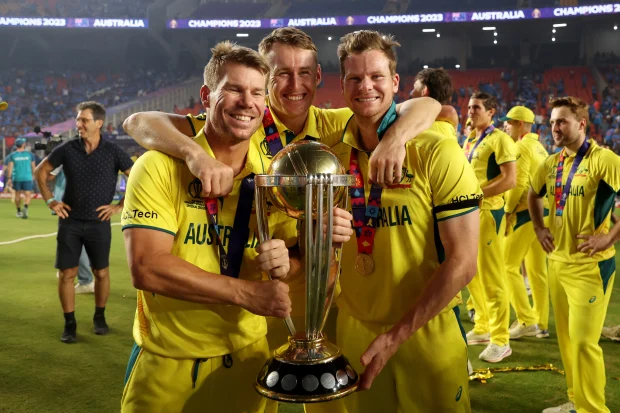

Què és l'ODI?
L'ODI és el format d'un dia amb 50 overs per equip.
La Copa del Món de Cricket és el torneig ODI més gran del món.
El primer ODI es va jugar el 1971 entre Austràlia i Anglaterra.
Back to HomeL'ODI és el format d'un dia amb 50 overs per equip.
La Copa del Món de Cricket és el torneig ODI més gran del món.
El primer ODI es va jugar el 1971 entre Austràlia i Anglaterra.
Back to Home